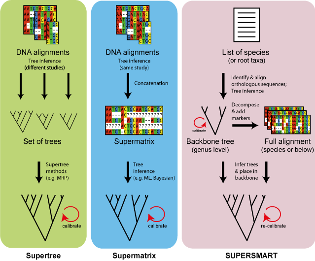

Introduction
The Self-Updating Platform for Estimating Rates of Speciation and Migration, Ages and Relationships of Taxa (SUPERSMART) is a self-contained, easy to install analytical environment for large-scale phylogenetic data mining, taxonomic name resolution, tree inference and fossil-based tree calibration.
Unlike supertree and supermatrix approaches, SUPERSMART decomposes the tree searching problem into subproblems so that complicated recent divergences can be reconstructed using the current state-of-the-art (the multispecies, multilocus coalescent), while retaining the ability to build very large, composite estimates of phylogeny with branch lengths proportional to time.
Detailed information about SUPERSMART is available in 10.7287/peerj.preprints.501v1
Installation
We have made every effort to make installation of SUPERSMART as simple as possible on as many different computers as possible. The three, easy steps described below are known to work on the majority of modern computers with recent versions of Windows, Mac OS X and Linux-like operating systems. The end result is an installation that allows you to try out SUPERSMART, but it does not take full advantage of some of the speedups provided by the kind of high-performance computing (HPC) clusters that are available at certain academic computing centres*.
(*To install the HPC version of SUPERSMART go to the advanced topics.)Step 1: Install VirtualBox
 VirtualBox extends the capabilities of your existing computer so that it can run
multiple operating systems (inside multiple "virtual machines", or VMs) at the
same time. Because SUPERSMART consists of many different tools that depend on
one another we make it available as a VM that can run on any operating system
that VirtualBox can run on. VirtualBox is free and open source software.
Go here to download, then
run the installer.
VirtualBox extends the capabilities of your existing computer so that it can run
multiple operating systems (inside multiple "virtual machines", or VMs) at the
same time. Because SUPERSMART consists of many different tools that depend on
one another we make it available as a VM that can run on any operating system
that VirtualBox can run on. VirtualBox is free and open source software.
Go here to download, then
run the installer.
Step 2: Install Vagrant
Vagrant is a system for downloading, managing and launching virtual machines. It tightly integrates with VirtualBox to fetch and run the most up to date version of the SUPERSMART VM and to connect it to your existing computer (e.g. to exchange data). Vagrant is free and open source software. Go here to download, then run the installer.
Step 3: Download and launch SUPERSMART
In the last step, download SUPERSMART itself, unzip the downloaded file (in some cases this happens automatically), navigate in the terminal to the unzipped folder and issue the following commands:
> cd supersmart-master/conf > vagrant up > vagrant ssh
Please note: the vagrant up step will download a large amount
of data (~8Gb). This is a one time operation. Ensure that you have a fast internet
connection and enough drive space for this. The vagrant ssh command
will log you into the SUPERSMART environment.
Running
The SUPERSMART pipeline consists of a number of different steps that can be chained together by issuing commands in a terminal window, or by using scripting tools such as shell scripts, Makefiles, and so on.
The smrt command
When logged into the SUPERSMART environment, steps of the pipeline can be
executed by issuing the smrt command in the
terminal with the appropriate global options, subcommands, and their arguments,
as follows:
smrt [OPTIONS] [commands|help] [SUBCOMMAND] [ARGUMENTS]
Examples of different ways in which smrt can be
used:
- smrt
- Prints brief, overall help message and quits.
- smrt --version
- Prints version number and quits.
- smrt commands
- Lists all available subcommands and quits.
- smrt help [SUBCOMMAND]
- Prints help message about the specified subcommand and quits.
- smrt [SUBCOMMAND] [ARGUMENTS]
- Runs the specified subcommand with the provided arguments.
- smrt [OPTIONS] [SUBCOMMAND] [ARGUMENTS]
- Runs the specified subcommand with the provided arguments and with
alternative global options in effect. The following global options are
available:
- --workdir=<location>
- Specifies where data files are written to and read from. By default this is the current working directory.
- --verbose
- Sets the global verbosity, can be repeated multiple times. By default, verbosity is set such that warning and error messages are shown, but informational and debugging messages are hidden.
Available subcommands
The following subcommands, which represent steps of the pipeline, are
available. For detailed usage, consult their respective usage messages by
issuing smrt help [SUBCOMMAND].
- taxize
- Performs taxonomic name resolution by mapping a provided list of input names onto the NCBI taxonomy. Optionally expands the higher input taxa to the specified lower taxon, e.g. to expand a named Order to its constituent species. Produces a table that lists all resolved (and expanded) taxa and their higher classification.
- classify
- Given an input table of resolved taxa, produces a taxonomy tree, i.e. a polytomous cladogram with labeled interior nodes, in Newick format. This tree is used as a starting tree to infer a backbone phylogeny.
- align
- Given an input table of resolved taxa, performs multiple sequence
alignment of all potentially useful PhyLoTA
clusters for the taxa of interest. Produces a list of aligned candidate
clusters. The alignment method can be configured, effective methods
include those provided by
muscleandmafft. - orthologize
- Given a list of aligned candidate clusters, assigns orthology among the
clusters by performing reciprocal
blastsearches on the seed sequences around which the clusters were assembled. Produces a list of re-aligned superclusters. - bbmerge
- Given a list of superclusters and an input table of resolved taxa, creates a supermatrix that can be used to infer a backbone phylogeny. The supermatrix contains up to two, distal exemplar species from each genus and an optimized selection of superclusters that minimizes sparseness of the supermatrix while attaining a user-specified minimum number of distinct markers for each taxon and omitting any alignments that exceed a user-specified maximum amount of sequence divergence.
- bbinfer
- Given a supermatrix and a starting tree, infers a backbone phylogeny. This
backbone is typically a tree that reconstructs the relationships among a large
number of genera (represented by up to two exemplar species) and so this step
employs large-scale phylogenetic inference methods such as provided by
ExaMLand similar tools. - bbreroot
- Given a backbone phylogeny and a table of resolved taxa, reroots the phylogeny to approximate the rooting implied by the classification hierarchy of the provided, resolved taxa.
- bbcalibrate
- Given a rooted molecular backbone phylogeny and a table of fossils,
performs tree calibration using
treePL. Produces an ultrametric tree with branch lengths proportional to evolutionary time (i.e. a "chronogram"). - bbdecompose
- Given a rooted backbone phylogeny, a list of superclusters and a table of resolved taxa, decomposes the backbone into its constituent, most recent, monophyletic clades, expands these clades into all taxa from the provided table and assembles sets of alignments for each clade that can be used for further tree inference within that clade.
- clademerge
- For each decomposed clade, merges the set of alignments assembled for this clade into an input file for tree inference.
- cladeinfer
- For each decomposed clade, infers the species tree. This is done using
the multispecies, multilocus coalescent as implemented in
*BEASTon the basis of the merged set of alignments for that clade. - cladegraft
- Grafts the inferred clade trees on the backbone chronogram.
Advanced topics
Installing on HPC systems
To take advantage of the infrastructure provided by HPC clusters it is generally best to compile key components of the SUPERSMART pipeline from source code. To simplify this process we provide a "provisioning" script. This script is written for puppet, which consequently must be available on your system. The script compiles and installs all dependencies, data, and code that SUPERSMART needs. At present this is done in system-wide locations, so the commands below must be executed by a privileged user*:
# git clone https://github.com/naturalis/supersmart.git # cd supersmart/conf # puppet apply
The provisioning that commences when the puppet apply command is
issued can take several hours to complete.
Updating SUPERSMART
The SUPERSMART pipeline is continuously under development. It is therefore wise
to periodically check for updates. To do this, boot into the virtual machine
(e.g. with vagrant ssh) and issue the following commands:
> cd $SUPERSMART_HOME > git pull
Advanced configuration
The SUPERSMART pipeline is configured using the file
$SUPERSMART_HOME/conf/supersmart.ini. Here are some of the variables
in this file that can be configured by users:
- EXAML_MODEL
- The substitution model used when inferring the backbone phylogeny. Possible values are GAMMA for a gamma model of rate heterogeneity with 4 discrete rates, or PSR for a per-site rate category model.
- TREEPL_SMOOTH
- Smoothing factor for the penalized likelihood tree calibration.
- BURNIN
- Fraction of burn-in to omit for the clade inference step.
- MSA_TOOL
- Multiple sequence alignment tool to use. Wrappers are available for a variety of possible aligners (which can be specified here as: mafft, clustalw, kalign, muscle, probalign, probcons, tcoffee, amap) but the VM comes bundled with mafft and muscle.
- ALN_MERGE
- Specifies the method to use for assigning orthology among aligned clusters. The value 'blast' refers to reciprocal BLAST searches, and is most tested. Other, experimental values are 'inparanoid', where orthology is assigned transitively from orthology assessments produced by the InParanoid project (for coding regions), or 'feature', which depends on standardized locus names in sequence annotations.
- MERGE_OVERLAP
- Specifies the minimum amount of reciprocal overlap among orthologous clusters for them to be merged into a supercluster.
- BACKBONE_INFERENCE_TOOL
- Specifies the tool used for inferring the backbone phylogeny. Possible values are examl or exabayes.
- BACKBONE_MAX_DISTANCE
- Maximum amount of average pairwise sequence distance that the pipeline accepts for superclusters to be included in the backbone inference step.
- BACKBONE_MIN_COVERAGE
- Minimum number of loci that must be assembled for each taxon in the supermatrix.
- CLADE_MAX_DISTANCE
- Maximum amount of average pairwise sequence distance that the pipeline accepts for superclusters to be included in the clade refinement step.
- CLADE_MIN_DENSITY
- Minimum fraction of clade members (taxa) that must be sequenced in an alignment for it to be included in the clade refinement step.
- FOSSIL_BEST_PRACTICE_CUTOFF
- Defines the minimum 'best practice score' for records from the fossil table to be used as calibration points in the tree calibration.
Resources
- Source code repository
- Naturalis Bioinformatics
- Antonelli lab
- PhyLoTA
- TaxoSaurus
- SUPERSMART-dev
- SUPERSMART-users
- Bug tracker
People
- Alexandre Antonelli
- Rutger Vos
- Hannes Hettling
- Mike Sanderson
- Bengt Oxelman
- Karin Nilsson
- Mats Töpel
- Hervé Sauquet
- Henrik Nilsson
- Daniele Silvestro
- Fabien Condamine
- Ruud Scharn